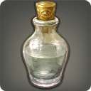

Spirit of Azim


Vodka from the Azim Steppe.
Vodka from the Azim Steppe.
A mix of vodka, blue curacao, pineapple juice and coconut milk.

A dark lager.

An ananta specialty. We don't even know what's in it.

A strong Hannish herb liquor.
Riverstone Travels business contact: Rapu Riverstone@Sagittarius